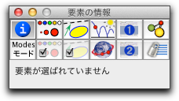
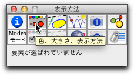
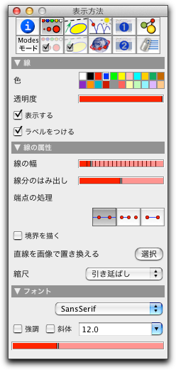
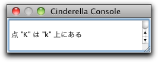

パッポスの定理
パッポスの定理は、射影幾何において最も基本的な定理の一つです。 ある意味で「3直線が1点で交わる」とか「3点が1直線上にある」といったタイプの定理の中で最も簡単な例だと言えましょう。 ここでは、一つ一つ要素を付け加えることによって図を作っていって定理の結論を確かめましょう。 また、最初においた頂点を動かすことによって、図を変形させても定理が成り立ち続けることを確かめられると思います。
最初の点を描く
シンデレラを始めると、最初はユークリッド表示 のウィンドウが出てきます。 このウィンドウには、シンデレラの機能のほとんどが割り当てられているツールバー (小さい絵ボタンの列)がついています。 このツールバー の下には平面(描画面)が用意され、 ここに作図、操作をし、図を構成していきます。ツールバーの中の
 というボタンだけが少し暗い色になっているのが分かるでしょう。これはシンデレラの現在の操作モードを示しています。
というボタンだけが少し暗い色になっているのが分かるでしょう。これはシンデレラの現在の操作モードを示しています。描画面でのマウス操作は、この操作モードに従った動作となります。 点を一つ打つため 点を加える
 のアイコンをクリックします。次に、 マウスを描画面の上へ持っていき、左ボタンをクリックして下さい。 新しい点が描画面に追加され、自動的に大文字の名前がつけられます(図1)。
のアイコンをクリックします。次に、 マウスを描画面の上へ持っていき、左ボタンをクリックして下さい。 新しい点が描画面に追加され、自動的に大文字の名前がつけられます(図1)。 |
| 図1：最初に描いた点 |
二つ目の点を描画面に描く前に、まず続きを読んで下さい。 点を描画面に描く途中で、マウスのボタンを離してしまわずに押したままマウスを動かすと点を描画面上で自由に動かすことができるのがわかるでしょう。 点は、マウスの描画面上の現在の位置において幾何的状況にあうように定義されるのです (まだわたしたちの描いたものに幾何的状況というほどのものはそれほど現われていませんが、じきに現われてきます)．マウスを描画面上で動かしてみて、(左)ボタンを押してください。 そしてボタンを押したままマウスを動かしてみてください。 (訳註：これをドラッグするといいます。) がマウスにくっついてくるのがわかるでしょう。 その点の座標が点といっしょに表示されます。 すでに描かれた点に近づけてみる (やってみてください)と、新しい点が、古い点にスナップ する(音はしませんが、ぱちん、という感じで重なります) のがわかります。 さらに動かしてマウスボタンを離して はじめてそこに点が追加されます。 (古い点にスナップしたところでボタンを離すと、点は追加されません。 こんな調子で描画面にいくつか点を追加してみてください。(図2)
 |
| 図2：たくさんの点 |
操作のやり直し
画面上にたくさんの点を描いたかもしれませんね。 そういうとき、取り消しで、 自分が画面上でやった作業を取り消すことができるのです。 取り消しボタン
 を押せば、最後に描いた点が消えるでしょう。 「取り消し」を何回か押して、描画面の上にちょうど2つの点だけが残るようにしてみましょう。この作業を通して、もし間違った操作をしてしまっても、「取り消し」で元に戻せること、また何回でも戻せることがわかります。
を押せば、最後に描いた点が消えるでしょう。 「取り消し」を何回か押して、描画面の上にちょうど2つの点だけが残るようにしてみましょう。この作業を通して、もし間違った操作をしてしまっても、「取り消し」で元に戻せること、また何回でも戻せることがわかります。点を動かす
さて、パッポスの定理の図を作ってみましょう残った2点 A と B をだいたい図3のような位置に置いてください。
 |
| 図3：図のように動かしてください |
あるいは、あなたの描いた最初の2点はぜんぜん違う位置にあるかもしれません。そのような時は動かすモード にするために、ツールバーの
ボタンを押してください。 このモードにすると、描画面でクリックしてももはや点は描かれません。 そのかわり、すでに描かれた点を動かすことができるようになっています。 動かしたい点の上にマウスを持っていってマウスボタンを押してください。そしてドラッグしてください。 Tすると点はマウスに従って動きます。 なお、このモードでは他の点にスナップしないことにも気づくでしょう。 ボタンを離せば点はそこに置かれます。 一般的には、点を動かすモードでは、図の中の自由要素をドラッグすることによって動かすことができます。 (自由要素の位置から作図で決まる)残りの図は、自由要素の動きに従って自動的に動きます。直線を加える
さて、 A と Bとを結ぶ直線を引いてみましょう。 直線を加える モードにするために、ツールバーの
 ボタンを押してください。 このモードでは、「押す、ドラッグする、離す」という一連の動作によって、2点を結ぶ直線を描くことができます。 マウスを A に置いてください。左ボタンを押しながら、マウスを動かして点 B に重ねてください。 そしてボタンを離します。
ボタンを押してください。 このモードでは、「押す、ドラッグする、離す」という一連の動作によって、2点を結ぶ直線を描くことができます。 マウスを A に置いてください。左ボタンを押しながら、マウスを動かして点 B に重ねてください。 そしてボタンを離します。 |
| 図4：直線を加える |
この方法で、求める直線が描けたはずです。 いくつか注意をしておきましょう。 点 A の上でマウスボタンを押したとき、その点が白く光ります (ハイライトするといいます)． これは「あなたが(今から描かれるべき)直線のスタートする点としてそこを選んだ」ということを意味します。 マウスをドラッグしている間、マウスの位置には必ず二つ目の点が現れ、ボタンを離した時、二つ目の点がその位置に置かれるのです。 ですから、ボタンを離す前にマウスをほかの点(たとえば B )にスナップすれば、新しい点が作られずに、その点を二つ目の点とみなして直線が描かれるのです。
もし、あなたがうまくこの動作を行えなくても、取り消しボタンで何回でもトライしてみることができます。 図4のような図ができるまで、何度でも挑戦してみてください。
さらに直線を描く
図5のような図を作るために、もう3本の直線を追加します。この作業は次の3つのマウス操作で行うことができます。 まず、点 B にマウスを合わせて、「押す、ドラッグする、離す」の作業で点 Cを図5のような位置に作ります。 次に、点 C から始めて点 D を、点 D から始めて点 E を作ります。
 |
| 図5：さらに直線を描く |
実は、ここまでは"直線を加える"というモードだけで作れたということに注意しましょう。 点を加えるモードで点 A と B を描きましたがこれは不必要な作業でした． 同じことを直線を加えるモードで直接行うこともできたのです。 というのは、このモードでは、二つ目の点が生成されるばかりでなく、もし必要とあらば一つ目の点も生成されるからなのです。こうして作られた直線には小文字で a から d までの名前が自動的につけられます。
交点を決める
さて、引き続き直線を加えるモードのままでいましょう。 さて、点 E と、直線 a と直線 c との交点を結ぶ直線を引くことにしましょう。 マウスを点 E の上に持っていきます。そこで、「押す、ドラッグする、離す」と いう動作を始めるのですが、ドラッグしながらマウスを直線 a と直線 c との交点のあたりに持ってきてみてください。2直線がぴかっと光ったところでボタンを離すのです。
 |
| 図6：交点を加える |
ドラッグしたマウスを2直線の交点のあたりに持ってくると、その2直線がハイライトし、マウスが交点にスナップされます。 そこで、マウスボタンを離すと、新しい点 F が交点として定義され、そこまでの直線が描かれます。 ここで、ツールバーから動かすモードを選び、点 A から点 E を少し動かしてみましょう。 それに従って直線や点 F が動きます。
こうして現れた新しい点 F は少し暗い色で表示されているのがわかるでしょうか。これは「点 F は動かすモードで動かせない点である」ということを意味しています。 こういう点を「従属点」と呼ぶことにします。 ほかの点は、動かすモードで動かすことができますから、「自由点」と呼ぶことにします。
ここで、さらに注意しておきます。 同じような構成法で、「半自由点」を作ることもできます。 これは、特定の直線の上だけを動けるような自由点のことを言います。 これは、点を加えるモードですでにある直線(の点でないところ)でマウスボタンを離せば作ることができます。 ほかにも インタラクティブモードでも同じようなことができます。 詳しくはリファレンスガイドをご覧ください。
描画の完成
さらに直線を追加して、作図を完成させましょう。 図7と同じような図を作ることができるでしょうか。まず点 A から b と d の交点までの直線を引きます。 そして A から D 、そして B から E までの直線を引きます。 最後に、 C から e と f の交点までの直線を引きます。
 |
| 図7：パッポスの定理 |
さてここまで8個の点と9本の直線を描きました． ここまでの図をみると、(もし正しく描けていればの話ですが)何かに気づくでしょう。 そうです。 3本の直線 g, h, k が一点で交わっています。 このような図を描くといつでもそうなっているというのがパッポスの定理の内容です 動かすモード にするために、ツールバーの
をクリックします。自由点(明るいオレンジ色の点)をドラッグして動かしてみると、 いつでもこの3直線が一点で交わっていることが確認できます。 この定理はギリシアで古くから知られていたことで、４世紀ごろ活躍していたアレキサンドリアのパッポスの名前がつけられ、射影幾何学において基本的で重要な定理であることが再認識されたのでした。要素の設定を変更する
もしかしたら、あなたはこの図のできばえに満足していないかもしれません。 直線は細すぎるし、定理の最終結論をどこかに書いておきたいと思うかもしれません。 このようなことは インスペクタ を使うとできます。 メニューから「編集」→「インスペクタ」を選んでください。 次のようなウィンドウが現れます(図8)
 |
| 図8 : インスペクタ |
インスペクタには、図形のいろいろな性質や選ばれた要素に応じていくつかのタブが用意されています。ここでは要素の表示方法を変更したいので、 ボタン
 を押して、表示方法のタブを出します。 そのとき、要素が選ばれていないと、インスペクタは編集する要素がない旨を表示します。
を押して、表示方法のタブを出します。 そのとき、要素が選ばれていないと、インスペクタは編集する要素がない旨を表示します。 |
| 表示方法 |
ここでどれかの要素を選べば、編集できる属性が直ちに表示されます。 では、ボタン
 "すべての直線を選ぶ" をクリックして、直線をすべて選択しましょう。 インスペクタウィンドウは次のようになります。
"すべての直線を選ぶ" をクリックして、直線をすべて選択しましょう。 インスペクタウィンドウは次のようになります。 |
| 図9: 表示方法のタブ |
インスペクタで変更したものは、すぐにその要素に適用されます。 「線の幅」 のスライダーを３番目の目盛まで動かすと すべての直線が太くなります。次に、 <
ボタンを押して動かすモードにします。 このモードでは、1つまたはいくつかの要素を選択することができます。要素を1つだけ選択する場合はその要素をクリックします。シフトキーを押したまま要素をクリックすると、それらの要素が選択または非選択状態になります。まず直線 k の上でクリックし、シフトキーを押したまま直線 h と g をクリックしましょう。 ３本の直線 g, h, k が明るく表示されるでしょう。 インスペクタのカラーパレットの中の赤い四角をクリックしましょう。 ３本の直線が青から赤に変わります。 「線の幅」のスライダのつまみを4番目の目盛まで移動することによってこの3本の線の太さを変更することができます。最後に すべての選択を解除 するために、ボタン
 を押します。
を押します。 |
| 図11: 表示方法(外観)の変更 |
最後の点を追加して、定理の証明を行う
先に進む前に シンデレラ の情報ウィンドウを開くために メニューから(表示)→(情報)を選んでください。 情報ウィンドウが開きます シンデレラ は作図の中に現れた自明でない事実をこのウィンドウに表示します。
さて、3本の赤い直線の交点を追加しましょう。 (訳註：シンデレラでは点を加えるモードで3本の直線の交点を加えることは避けたほうが良いのです。というのは2本の直線の交点でしたら1つに決まりますが、3本が1点で交わるというのは数学的事実なのか それともたまたま一致しただけなのか、2つの場合があるからです。) 今度は 交点 モード
 によって、交点を作ります。 このモードでは２つの直線の交点を新しい点として追加することができます。 ２本の赤い直線 g と h を順にクリックしましょう。交点ができます。
によって、交点を作ります。 このモードでは２つの直線の交点を新しい点として追加することができます。 ２本の赤い直線 g と h を順にクリックしましょう。交点ができます。 |
| 図 12: 交点を追加 |
さて、この点には K という名前がついていますが、パッポスの定理により、この点はいつでも直線 k の上 にあることになります。 情報ウィンドウにはこの注目すべき事実が自動的に表示されます。
 |
| 図13: 証明された定理 |
「証明」をどうやって行っているか、きっと不思議に思うでしょう。 シンデレラは形式的な証明を生成する記号論的手法は使いません。 その代わりに「定理自動証明」と呼ばれる方法を用いています。 まず、「直線 k 上に点 K はいつもあるようだ」という予想を立てます。 そして、自由点を少し動かしてみてやはりその予想が成り立つかどうかを調べます。 数学的にちょっと変な気がするかもしれませんが、十分に(!)ランダムに(!)自由点を動かしても成り立っているような性質は少なくとも、記号論によって証明された命題と同じくらい信頼できるのです。 シンデレラはこの方法を絶えず用いて、保有しているデータの構造を的確に把握するようにしています。
点を無限遠点へと動かす
パッポスの定理の対称性について調べてみましょう。 図をよりよくするために、点と直線のラベル(名前の表示)を消して、点と直線をもう少し小さくしましょう。 まず
ボタンを使ってすべての直線を選択しましょう。インスペクタを開いて、「ラベルをつける」の右側のボタンを押して、ラベルを消してください。 そして、直線の幅を細くしてください(線の幅スライダの目盛を2番目にします)． そして、次には  ボタンを押してすべての点を選んでください。そして、点の大きさをもう少し小さくしましょう (インスペクタはいつも選択されている要素の情報を示しています。点の大きさスライダの目盛りを左へ2目盛り動かしてください)。 そして、メニューから「表示」→「球面表示」を選んでください。 そこに最初に現れた画像はどう見てもわかりにくいものだと思います。
ボタンを押してすべての点を選んでください。そして、点の大きさをもう少し小さくしましょう (インスペクタはいつも選択されている要素の情報を示しています。点の大きさスライダの目盛りを左へ2目盛り動かしてください)。 そして、メニューから「表示」→「球面表示」を選んでください。 そこに最初に現れた画像はどう見てもわかりにくいものだと思います。 |
| 図14: 球面表示 |
新しく表示された図は球面なのです。 平面から球面へのある射影を考えると、平面の図が球面に写ることがわかります。 射影の原点は球面の中心です (図15を見てください)． 平面上の任意の点について、球面の中心と結ぶ直線を考えます.この直線と球面との交わりが射影の像になります。 ただし、球面の中心を通る直線は必ず球面と2点で交わるので、射影の像は2点あり、対蹠点(たいせきてん)の位置にあるこ とがわかります。 そして平面上の直線について、この直線と球面の中心を通る平面を考えます。 この平面と球面との交わりが射影の像になります。するとこれは球面上の大円であることがわかります。
 |
| 図15 : 平面から球面への射影 |
球面表示では、描画面の下に赤い細長いスライダがあって、もとの平面と射影される球面との距離を調節できます。 この赤いスライダの中の目盛りを左右に動かすことによって、球面上の図のズームアップのようなことが可能です。 赤いスライダの中の目盛りを右側へ動かして ください。 球面上の点の配置がよりはっきりとわかる図になりました。 うまく調節して、図16のようにしてみてください。 先ほど描いた図が球面上に写し出されているのがはっきりわかると思います。
 |
| 図16 : 球面上でのパッポスの定理 |
この図にはもう少し解説が必要です。 平面上の各点に対して、その点と球面の中心とを結ぶ空間直線を考えましょう。 この直線と球面との交わりは対蹠点となる2点です。 平面上の各直線に対しては、その直線と球面の中心とを含むような空間平面を考えましょう。 この平面と球面の交わりは大円であって、それが「球面表示」の画面に表示されているのです。
すると、球面表示の画面にはあるけれど、ユークリッド平面上の点とは対応していない点があることがわかります。 今、平面と球面の位置関係として、球面の南極点に平面が接している状況を考えてください。 すると、赤道上にある点は、平面に対応する点がなく、いわゆる「無限遠点」であることがわかります。 シンデレラでは、どの表示にあるときでも、操作を加えることができるようになっています。 つまり、球面表示の画面上でも、動かすモードにすれば自由点を自由に動かすことが可能です。 球面表示の方で点を動かせば、ユークリッド平面表示の方の図も連動して描き換わります。 とくに、球面表示のほうで、点をユークリッド平面上の無限遠点(に相当する場所)へ動かすことも可能です。
さて、あなたが作ったパッポスの定理の図にはきれいな3回対称性があることを観察してみましょう。 点 A を球面表示の上で、絵の境界の11時の方角へと動かしてみてください。 この点は無限遠点に位置します。 平面表示のほうを見てみると、点 A を通る直線は平行になっていることがわかります。 「平行線は無限遠点で交わる」というわけです。 同じように、 球面表示にもどして点 E をだいたい図の境界の7時の方角へ、点 C を絵の境界の3時の方角へと動かしていってください。 球面表示はだいたい図17右のようになるでしょう。 平面表示では3本の平行線が3組、交わっているのが見えるでしょう(図17左)． この図が、ユークリッド平面の上でのパッポスの定理の特別な場合となっているのです。 平行線を含む形のパッポスの定理の命題を再構成してみるのも面白いことでしょう。
 |  | |
| 図17: 3回対称性 |
ユークリッド平面表示では、図が大きすぎたり小さすぎたりすることがあるかもしれません。 そういう時は、ズームインやズームアウトすることができます。 ズームインボタン
 やズームアウトボタン
やズームアウトボタン  が平面表示の下のほうにあるのが見えるでしょう。これらのモードにして、 「押す、ドラッグする、離す」という作業を行えば、ドラッグした範囲のズームインやズームアウトができます。
が平面表示の下のほうにあるのが見えるでしょう。これらのモードにして、 「押す、ドラッグする、離す」という作業を行えば、ドラッグした範囲のズームインやズームアウトができます。(阿原)
Page last modified on Sunday 19 of February, 2012 [00:27:47 UTC].
The original document is available at
http://doc.cinderella.de/tiki-index.php?page=Pappus%20TheoremJ